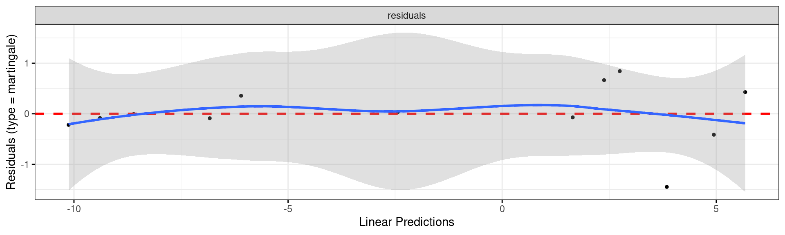
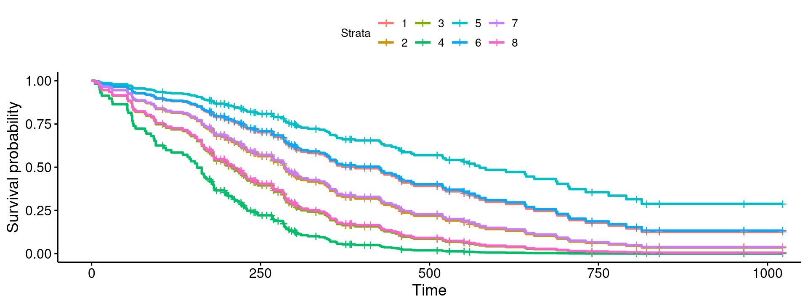
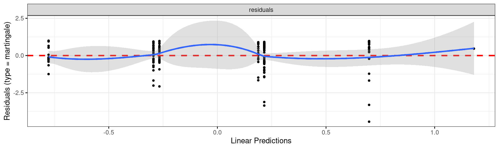
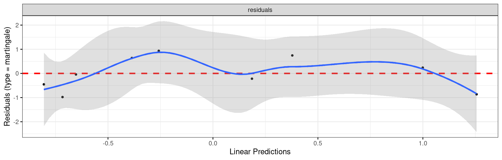

Survival Analysis
Survival analysis
So far, have seen:
response variable counted or measured (regression)
response variable categorized (logistic regression)
But what if response is time until event (eg. time of survival after surgery)?
Additional complication: event might not have happened at end of study (eg. patient still alive). But knowing that patient has “not died yet” presumably informative. Such data called censored.
Enter survival analysis, in particular the “Cox proportional hazards model”.
Explanatory variables in this context often called covariates.
Packages
- Install packages
survivalandsurvminerif not done.
Example: still dancing?
12 women who have just started taking dancing lessons are followed for up to a year, to see whether they are still taking dancing lessons, or have quit. The “event” here is “quit”.
This might depend on:
a treatment (visit to a dance competition)
woman’s age (at start of study).
Data
Months Quit Treatment Age
1 1 0 16
2 1 0 24
2 1 0 18
3 0 0 27
4 1 0 25
7 1 1 26
8 1 1 36
10 1 1 38
10 0 1 45
12 1 1 47About the data
monthsandquitare kind of combined response:Monthsis number of months a woman was actually observed dancingquitis 1 if woman quit, 0 if still dancing at end of study.
Treatment is 1 if woman went to dance competition, 0 otherwise.
Fit model and see whether
AgeorTreatmenthave effect on survival.Want to do predictions for probabilities of still dancing as they depend on whatever is significant, and draw plot.
Read data
- Column-aligned:
The data
Examine response and fit model
- Response variable:
# A tibble: 12 × 5
Months Quit Treatment Age mth
<dbl> <dbl> <dbl> <dbl> <Surv>
1 1 1 0 16 1
2 2 1 0 24 2
3 2 1 0 18 2
4 3 0 0 27 3+
5 4 1 0 25 4
6 5 1 0 21 5
7 11 1 0 55 11
8 7 1 1 26 7
9 8 1 1 36 8
10 10 1 1 38 10
11 10 0 1 45 10+
12 12 1 1 47 12 - Then fit model, predicting
mthfrom explanatories:
Output looks a lot like regression
Call:
coxph(formula = mth ~ Treatment + Age, data = dance)
n= 12, number of events= 10
coef exp(coef) se(coef) z Pr(>|z|)
Treatment -4.44915 0.01169 2.60929 -1.705 0.0882 .
Age -0.36619 0.69337 0.15381 -2.381 0.0173 *
---
Signif. codes: 0 '***' 0.001 '**' 0.01 '*' 0.05 '.' 0.1 ' ' 1
exp(coef) exp(-coef) lower .95 upper .95
Treatment 0.01169 85.554 7.026e-05 1.9444
Age 0.69337 1.442 5.129e-01 0.9373
Concordance= 0.964 (se = 0.039 )
Likelihood ratio test= 21.68 on 2 df, p=2e-05
Wald test = 5.67 on 2 df, p=0.06
Score (logrank) test = 14.75 on 2 df, p=6e-04Conclusions
Use \(\alpha=0.10\) here since not much data.
Three tests at bottom like global F-test. Consensus that something predicts survival time (whether or not dancer quit and how long it took).
Age(definitely),Treatment(marginally) both predict survival time.
Model checking
With regression, usually plot residuals against fitted values.
Not quite same here (nonlinear model), but ``martingale residuals’’ should have no pattern vs. “linear predictor”.
ggcoxdiagnosticsfrom packagesurvminermakes plot, to which we add smooth. If smooth trend more or less straight across, model OK.Martingale residuals can go very negative, so won’t always look normal.
Martingale residual plot for dance data
This looks good (with only 12 points):
Predicted survival probs
- The function we use is called
survfit, though actually works rather likepredict. - First create a data frame of values to predict from. We’ll do all combos of ages 20 and 40, treatment and not, using
crossingto get all the combos:
The predictions
One prediction for each time for each combo of age and treatment in dance.new:
Call: survfit(formula = dance.1, newdata = dance.new, data = dance)
time n.risk n.event survival1 survival2 survival3 survival4
1 12 1 8.76e-01 1.00e+00 9.98e-01 1.000
2 11 2 3.99e-01 9.99e-01 9.89e-01 1.000
4 8 1 1.24e-01 9.99e-01 9.76e-01 1.000
5 7 1 2.93e-02 9.98e-01 9.60e-01 1.000
7 6 1 2.96e-323 6.13e-01 1.70e-04 0.994
8 5 1 0.00e+00 2.99e-06 1.35e-98 0.862
10 4 1 0.00e+00 0.00e+00 0.00e+00 0.000
11 2 1 0.00e+00 0.00e+00 0.00e+00 0.000
12 1 1 0.00e+00 0.00e+00 0.00e+00 0.000Conclusions from predicted probs
Older women more likely to be still dancing than younger women (compare “profiles” for same treatment group).
Effect of treatment seems to be to increase prob of still dancing (compare “profiles” for same age for treatment group vs. not)
Would be nice to see this on a graph. This is
ggsurvplotfrom packagesurvminer:
“Strata” (groups)
- uses “strata” thus (
dance.new):
# A tibble: 4 × 2
Treatment Age
<dbl> <dbl>
1 0 20
2 0 40
3 1 20
4 1 40Plotting survival probabilities

Discussion
Survivor curve farther to the right is better (better chance of surviving longer).
Best is age 40 with treatment, worst age 20 without.
Appears to be:
age effect (40 better than 20)
treatment effect (treatment better than not)
In analysis, treatment effect only marginally significant.
A more realistic example: lung cancer
When you load in an R package, get data sets to illustrate functions in the package.
One such is
lung. Data set measuring survival in patients with advanced lung cancer.Along with survival time, number of “performance scores” included, measuring how well patients can perform daily activities.
Sometimes high good, but sometimes bad!
Variables below, from the data set help file (
?lung).
The variables

Uh oh, missing values
inst time status age sex ph.ecog ph.karno pat.karno meal.cal wt.loss
1 3 306 2 74 1 1 90 100 1175 NA
2 3 455 2 68 1 0 90 90 1225 15
3 3 1010 1 56 1 0 90 90 NA 15
4 5 210 2 57 1 1 90 60 1150 11
5 1 883 2 60 1 0 100 90 NA 0
6 12 1022 1 74 1 1 50 80 513 0
7 7 310 2 68 2 2 70 60 384 10
8 11 361 2 71 2 2 60 80 538 1
9 1 218 2 53 1 1 70 80 825 16
10 7 166 2 61 1 2 70 70 271 34
11 6 170 2 57 1 1 80 80 1025 27
12 16 654 2 68 2 2 70 70 NA 23
13 11 728 2 68 2 1 90 90 NA 5
14 21 71 2 60 1 NA 60 70 1225 32
15 12 567 2 57 1 1 80 70 2600 60
16 1 144 2 67 1 1 80 90 NA 15A closer look
inst time status age
Min. : 1.00 Min. : 5.0 Min. :1.000 Min. :39.00
1st Qu.: 3.00 1st Qu.: 166.8 1st Qu.:1.000 1st Qu.:56.00
Median :11.00 Median : 255.5 Median :2.000 Median :63.00
Mean :11.09 Mean : 305.2 Mean :1.724 Mean :62.45
3rd Qu.:16.00 3rd Qu.: 396.5 3rd Qu.:2.000 3rd Qu.:69.00
Max. :33.00 Max. :1022.0 Max. :2.000 Max. :82.00
NA's :1
sex ph.ecog ph.karno pat.karno
Min. :1.000 Min. :0.0000 Min. : 50.00 Min. : 30.00
1st Qu.:1.000 1st Qu.:0.0000 1st Qu.: 75.00 1st Qu.: 70.00
Median :1.000 Median :1.0000 Median : 80.00 Median : 80.00
Mean :1.395 Mean :0.9515 Mean : 81.94 Mean : 79.96
3rd Qu.:2.000 3rd Qu.:1.0000 3rd Qu.: 90.00 3rd Qu.: 90.00
Max. :2.000 Max. :3.0000 Max. :100.00 Max. :100.00
NA's :1 NA's :1 NA's :3
meal.cal wt.loss
Min. : 96.0 Min. :-24.000
1st Qu.: 635.0 1st Qu.: 0.000
Median : 975.0 Median : 7.000
Mean : 928.8 Mean : 9.832
3rd Qu.:1150.0 3rd Qu.: 15.750
Max. :2600.0 Max. : 68.000
NA's :47 NA's :14 Remove obs with any missing values
meal.cal wt.loss
2 1225 15
4 1150 11
6 513 0
7 384 10
8 538 1
9 825 16
10 271 34
11 1025 27
15 2600 60
17 1150 -5Missing values seem to be gone.
Check!
inst time status age
Min. : 1.00 Min. : 5.0 Min. :1.000 Min. :39.00
1st Qu.: 3.00 1st Qu.: 174.5 1st Qu.:1.000 1st Qu.:57.00
Median :11.00 Median : 268.0 Median :2.000 Median :64.00
Mean :10.71 Mean : 309.9 Mean :1.719 Mean :62.57
3rd Qu.:15.00 3rd Qu.: 419.5 3rd Qu.:2.000 3rd Qu.:70.00
Max. :32.00 Max. :1022.0 Max. :2.000 Max. :82.00
sex ph.ecog ph.karno pat.karno
Min. :1.000 Min. :0.0000 Min. : 50.00 Min. : 30.00
1st Qu.:1.000 1st Qu.:0.0000 1st Qu.: 70.00 1st Qu.: 70.00
Median :1.000 Median :1.0000 Median : 80.00 Median : 80.00
Mean :1.383 Mean :0.9581 Mean : 82.04 Mean : 79.58
3rd Qu.:2.000 3rd Qu.:1.0000 3rd Qu.: 90.00 3rd Qu.: 90.00
Max. :2.000 Max. :3.0000 Max. :100.00 Max. :100.00
meal.cal wt.loss
Min. : 96.0 Min. :-24.000
1st Qu.: 619.0 1st Qu.: 0.000
Median : 975.0 Median : 7.000
Mean : 929.1 Mean : 9.719
3rd Qu.:1162.5 3rd Qu.: 15.000
Max. :2600.0 Max. : 68.000 No missing values left.
Model 1: use everything except inst
[1] "inst" "time" "status" "age" "sex"
[6] "ph.ecog" "ph.karno" "pat.karno" "meal.cal" "wt.loss" - Event was death, goes with
statusof 2:
“Dot” means “all the other variables”.
summary of model 1
Call:
coxph(formula = resp ~ . - inst - time - status, data = lung.complete)
n= 167, number of events= 120
coef exp(coef) se(coef) z Pr(>|z|)
age 1.080e-02 1.011e+00 1.160e-02 0.931 0.35168
sex -5.536e-01 5.749e-01 2.016e-01 -2.746 0.00603 **
ph.ecog 7.395e-01 2.095e+00 2.250e-01 3.287 0.00101 **
ph.karno 2.244e-02 1.023e+00 1.123e-02 1.998 0.04575 *
pat.karno -1.207e-02 9.880e-01 8.116e-03 -1.488 0.13685
meal.cal 2.835e-05 1.000e+00 2.594e-04 0.109 0.91298
wt.loss -1.420e-02 9.859e-01 7.766e-03 -1.828 0.06748 .
---
Signif. codes: 0 '***' 0.001 '**' 0.01 '*' 0.05 '.' 0.1 ' ' 1
exp(coef) exp(-coef) lower .95 upper .95
age 1.0109 0.9893 0.9881 1.0341
sex 0.5749 1.7395 0.3872 0.8534
ph.ecog 2.0950 0.4773 1.3479 3.2560
ph.karno 1.0227 0.9778 1.0004 1.0455
pat.karno 0.9880 1.0121 0.9724 1.0038
meal.cal 1.0000 1.0000 0.9995 1.0005
wt.loss 0.9859 1.0143 0.9710 1.0010
Concordance= 0.653 (se = 0.029 )
Likelihood ratio test= 28.16 on 7 df, p=2e-04
Wald test = 27.5 on 7 df, p=3e-04
Score (logrank) test = 28.31 on 7 df, p=2e-04Overall significance
The three tests of overall significance:
# A tibble: 1 × 4
p.value.log p.value.sc p.value.wald p.value.robust
<dbl> <dbl> <dbl> <dbl>
1 0.000205 0.000193 0.000271 NAAll strongly significant. Something predicts survival.
Coefficients for model 1
# A tibble: 7 × 2
term p.value
<chr> <dbl>
1 ph.ecog 0.00101
2 sex 0.00603
3 ph.karno 0.0457
4 wt.loss 0.0675
5 pat.karno 0.137
6 age 0.352
7 meal.cal 0.913 sexandph.ecogdefinitely significant hereage,pat.karnoandmeal.caldefinitely notTake out definitely non-sig variables, and try again.
Model 2
Compare with first model:
Analysis of Deviance Table
Cox model: response is resp
Model 1: ~ sex + ph.ecog + ph.karno + wt.loss
Model 2: ~ (inst + time + status + age + sex + ph.ecog + ph.karno + pat.karno + meal.cal + wt.loss) - inst - time - status
loglik Chisq Df Pr(>|Chi|)
1 -495.67
2 -494.03 3.269 3 0.352- No harm in taking out those variables.
Model 3
Take out ph.karno and wt.loss as well.
Check whether that was OK
Analysis of Deviance Table
Cox model: response is resp
Model 1: ~ sex + ph.ecog
Model 2: ~ sex + ph.ecog + ph.karno + wt.loss
loglik Chisq Df Pr(>|Chi|)
1 -498.38
2 -495.67 5.4135 2 0.06675 .
---
Signif. codes: 0 '***' 0.001 '**' 0.01 '*' 0.05 '.' 0.1 ' ' 1Just OK.
Commentary
OK (just) to take out those two covariates.
Both remaining variables strongly significant.
Nature of effect on survival time? Consider later.
Picture?
Plotting survival probabilities
- Create new data frame of values to predict for, then predict:
Making the plot
The plot
Discussion of survival curves
Best survival is teal-blue curve, stratum 5, females with
ph.ecogscore 0.Next best: blue, stratum 6, females with score 1, and red, stratum 1, males score 0.
Worst: green, stratum 4, males score 3.
For any given
ph.ecogscore, females have better predicted survival than males.For both genders, a lower score associated with better survival.
The coefficients in model 3
# A tibble: 2 × 3
term estimate p.value
<chr> <dbl> <dbl>
1 sex -0.510 0.00958
2 ph.ecog 0.483 0.000266sexcoeff negative, so being highersexvalue (female) goes with less hazard of dying.ph.ecogcoeff positive, so higherph.ecogscore goes with more hazard of dyingTwo coeffs about same size, so being male rather than female corresponds to 1-point increase in
ph.ecogscore. Note how survival curves come in 3 pairs plus 2 odd.
Martingale residuals for this model
No problems here:
When the Cox model fails
- Invent some data where survival is best at middling age, and worse at high and low age:
- Small survival time 15 in middle was actually censored, so would have been longer if observed.
Fit Cox model
Call:
coxph(formula = y ~ age, data = d)
n= 9, number of events= 8
coef exp(coef) se(coef) z Pr(>|z|)
age 0.01984 1.02003 0.03446 0.576 0.565
exp(coef) exp(-coef) lower .95 upper .95
age 1.02 0.9804 0.9534 1.091
Concordance= 0.545 (se = 0.105 )
Likelihood ratio test= 0.33 on 1 df, p=0.6
Wald test = 0.33 on 1 df, p=0.6
Score (logrank) test = 0.33 on 1 df, p=0.6Martingale residuals
Down-and-up indicates incorrect relationship between age and survival:

Attempt 2
Add squared term in age:
# A tibble: 2 × 3
term estimate p.value
<chr> <dbl> <dbl>
1 age -0.380 0.116
2 I(age^2) 0.00483 0.0977- (Marginally) helpful.
Martingale residuals this time
Not great, but less problematic than before:
